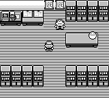
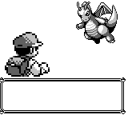
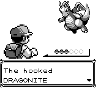
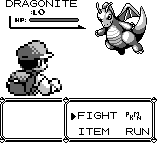

Glitch · Gen 1 cartridge
The hooked Dragonite
Stand on one specific tile near Pewter City's museum guide and the game's own pathing routine walks off the end of a four-entry table, wraps the entire 64K address space, and starts reading ROM graphics data as a list of button presses. It does not crash. It starts a wild battle against a level-0 Dragonite, using a battle type byte the game never assigns on purpose. Seventeen years of documentation say this is real. We put TerminalGB's own CPU at the routine's first instruction and watched it happen.
Reproduced 27 Sep 2026 on a retail image, Pokemon - Blue Version (USA, Europe)
(SGB Enhanced).gb, SHA-1 d7037c83e1ae5b39bde3c30787637ba1d4c48ce2.
Not a new discovery
This is not ours to claim. The glitch was found by Paco81 in 2009, analysed by TheZZAZZGlitch in 2019, and made catchable — the one genuinely new part — by a video from GlitchmonRBY in 2026, who credits the chain on the Glitch City Wiki page and adds their own catching method with the prior author's permission. The video runs on an emulator, uses the long-documented item-underflow glitch to set up the encounter, and is a re-enactment of a known route rather than a new find. The only question worth answering ourselves was whether the mechanism is what everyone says it is. It is — and reading the routine directly settled two details that every secondhand description of it gets wrong.
The mechanism
Two loops, forty bytes, no bound on either one.
What the routine is for
Looking up a canned walk
When a Pewter City guide NPC offers to walk the player somewhere, the game queues a sequence of fake button presses. It finds that sequence by searching a small coordinate table — four tiles for the museum guide, five for the other — for an entry matching the player's position, then copies the path that entry points to into a buffer.
The whole thing lives at 0D:7CA1. The search loop reads two
bytes at a time and compares them against wYCoord
($D361) and wXCoord ($D362). The copy
loop reads from wherever the search loop stopped, and writes to
wSimulatedJoypadStatesEnd ($CCD3 onward) until it
hits a $FF byte.
Where the bound should be and isn't
Neither loop can tell "not found" from "not yet"
The museum guide's table has exactly four entries. The search loop has no entry count and no end-of-table marker — it just keeps stepping forward four bytes at a time until two bytes happen to equal the player's coordinates, wherever in the address space that happens to be.
The copy loop is just as unbounded: it copies until it meets a
$FF, with no length limit and no check that the address it
started from was ever a real table entry. Either loop alone would be
survivable. Together, the search loop's "match" becomes the copy loop's
source pointer, and nothing between them checks that the match is real.
The one tile that breaks it
wYCoord = $1A, wXCoord = $0C
The museum guide's table starts at 0D:7CEA. Walking off the end
of it at four bytes a step runs past the end of the ROM bank, wraps
$FFFF → $0000, sweeps through VRAM, cartridge RAM, work RAM, OAM
and high RAM, wraps into ROM bank 0, and continues into bank $0D
— until it happens to hit two bytes that read $1A $0C.
There is exactly one such match in the whole ROM on that stride, at
0D:6084, sitting in the middle of compressed graphics data. The
two bytes immediately after it, read as a little-endian pointer, are
$73B4 — so the copy loop starts reading at 0D:73B4
and looks for a $FF. The first one is 898 bytes away.
What 898 bytes of graphics data does to work RAM
A battle, started by the game itself
The write lands at $CCE9 — one past the end of the player's real
queued path — and runs to $D06B. Everything in between gets
overwritten with compressed graphics bytes, read as movement data:
$CD6BwJoyIgnore→$0E— B, Select and Start stop responding$CFC5wWalkCounter→$F9— the engine thinks a walk animation is 249 units from finishing, and freezes the player until it counts down$CFC7wAudioFadeOutControl→$F6— the "follow me" music fades out slowly$D059wCurOpponent→$42— species index 66, Dragonite, confirmed from the ROM's own name table at07:421E$D05AwBattleType→$22— not a normal, tutorial or Safari battle: a glitch battle$D05F→$C4— non-zero, which is what makes the encounter print as "hooked"
wCurOpponent is the byte the overworld loop polls every frame at
bank 0 $043C; non-zero starts a fight. Nobody presses a button to
start this battle — the cartridge starts it on its own, once
wWalkCounter finishes counting down.
What it looked like
Captured from TerminalGB's own framebuffer during the reproduction below — the overworld before the routine runs, the freeze while the walk counter drains, the battle the cartridge starts by itself, and the menu that follows it.
01 · Before

02 · Frozen

wWalkCounter = $F9 — the player is locked out for about eight seconds before anything else happens.03 · Triggers

wCurOpponent poll, and the battle starts with no further input.04 · The hooked Dragonite

wCurOpponent = $42 — species 66. Not a scripted encounter; the byte the overflow wrote.05 · The name

$D05F is non-zero. Same mechanism behind the Hooked Metapod and the Hooked MissingNo. The party-ball row is normally a trainer-battle element; a wild encounter doesn't show one.06 · After A
07 · The menu

wBattleType = $22 is what let a battle exist here at all, not a visible glitch in the menu's own text.Two corrections
Reading the routine directly, rather than trusting the secondhand description, changed two things.
Correction 1
The coordinates are (y, x), not (x, y)
The briefed description read "X=26, Y=12". It is the other way round: the
routine reads wYCoord first, at 0D:7CBF, and the
matching ROM pair is 1A 0C — so wYCoord = $1A (26)
and wXCoord = $0C (12).
It is not a pedantic distinction. Swap the two and the search loop finds a
different pair entirely, whose "path" begins with $FF: the copy
loop returns immediately, zero bytes are copied, and nothing happens at all.
Reading a coordinate pair backwards is the difference between a battle and a
no-op.
Correction 2
$D05F and $D05A have undocumented second roles
AtlasGB's atlas lists $D05F as wMoveMissed — its
role during a battle — and nothing else. It has a second role the atlas
doesn't record: 16:4DB3 reads the same byte before the
battle to choose between "Wild " and "The hooked", and a shared reset routine
at 04:781D-$7826 clears it alongside $D05A and
$D059 as one battle-state reset. It's a unioned byte, and the
atlas records only half of it — confirmed by experiment, not just by reading,
by setting $D059=$42 and $D05F=$01 on a clean
machine and watching the hooked text print.
The commonly repeated description has its own gap: it names
$D059 and $D05F and stops there, missing
$D05A. wBattleType only ever holds 0 (normal), 1
(the old man's tutorial) or 2 (Safari Zone) in a real battle; the overflow
leaves it at $22, a value the battle code never assigns on
purpose. Two bytes cannot account for a battle whose own type byte reads as
none of the three the game recognises. $D05A does.
The reproduction
The overflow was executed by the cartridge's own code, not simulated. The battle that follows was replayed from the bytes that overflow actually wrote, then left alone.
-
The overflow: run by TerminalGB's real CPU. With
wYCoordandwXCoordset to the glitch tile, the PC placed at bank0D$7CA1, and the routine let run, it executed 150,792 instructions over 1,313,060 cycles — 0.31 seconds of Game Boy time, 18.7 frames, walking 14,568 phantom table entries — and returned withde = $D06B, the exact address the mechanism predicts. Every one of the seven bytes above matched, first try. -
The battle: reproduced with no further input. The 899 overflow bytes were
captured, written back onto a clean machine, and nothing else was done. 500
frames later the walk counter reached zero, the overworld loop hit its
wCurOpponentpoll, and the game started the wild battle on its own. - What was not reproduced: the in-game route. The documented route into this tile goes through the Safari Zone, which needs Fuchsia City — well past where any save on this machine has reached. The glitch coordinate and the guide's setup state were written by hand to place the CPU where the desynced in-game route would have put it; the 899-byte overflow itself was not — it is exactly what the CPU had just written, replayed rather than authored. This proves the mechanism, not the route, and the route is documented independently by three researchers across seventeen years.
-
One thing nobody else mentions: after the overflow the player cannot move
at all, because
wWalkCounteris non-zero — the community's own write-ups attribute the freeze entirely towJoyIgnore, but that byte only blocks three buttons. The walk counter freezes the player completely, on its own, for roughly eight seconds before the battle even starts.
Where these numbers come from
Every address and byte value above was read from a retail cartridge image,
Pokemon - Blue Version (USA, Europe) (SGB Enhanced).gb, SHA-1
d7037c83e1ae5b39bde3c30787637ba1d4c48ce2, 1,048,576 bytes, and
cross-checked against AtlasGB's vendored
Gen 1 memory atlas (2,891 addresses). The reproduction ran on TerminalGB's own CPU
core, executing the real routine rather than a model of it; every screenshot above
is a real frame from that run's framebuffer, not a mockup.
The glitch itself is not this project's discovery. It was found by Paco81 in 2009 and analysed by TheZZAZZGlitch in 2019; the catchable variant was demonstrated by GlitchmonRBY in 2026. The Glitch City Wiki page credits the full chain. What's here is our own independent reproduction and the two corrections it turned up.